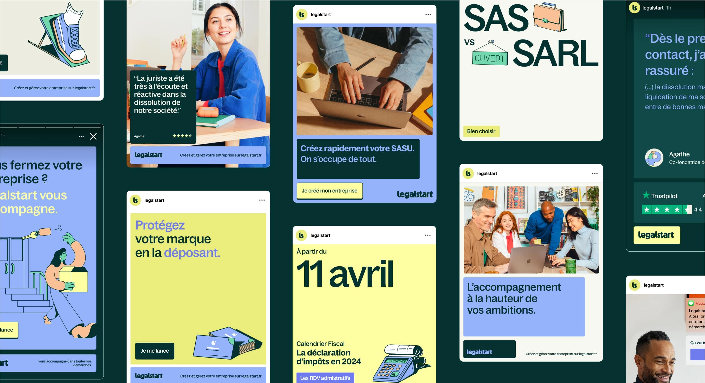

N°04 : Cas 01 · Recommandation agence
LegalStart
LEGAL rassure. START libère.
"Ce cas démontre ma capacité à transformer des freins business en concepts vidéo testables, pensés pour l'acquisition et la performance."

Challenge
Dans un marché de la création d'entreprise très corporate et peu différenciant, LegalStart doit générer plus de ventes tout en renforçant l'impact de ses campagnes d'acquisition.
Insight
Créer son entreprise active deux émotions opposées : l'envie de se lancer et la peur de se tromper. La stratégie doit à la fois libérer l'action et rassurer sur le cadre.
Réponse
Une plateforme créative en deux territoires : LEGAL rassure, START libère, déclinée en concepts vidéo, hooks différenciés, personas et logique de test & learn par canal.
5
Concepts vidéo testables
365k€
Budget média annuel
8
Semaines de test & learn